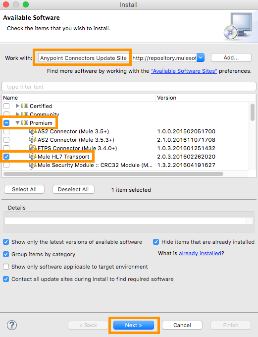

HL7 EDI
HL7 EDI lets you convert HL7 ER7 messages to and from DataWeave-compatible representations using lists and maps.
Release Notes: HL7 Connector Release Notes
HL7 EDI includes:
-
HL7 ER7 message-reading, message-validation, and message-writing
-
Integration with DataSense and DataWeave
-
HL7 message packs for v2.1, v2.2, v2.3.1, v2.3, v2.4, v2.5, v2.5.1, v2.6, 2.7, 2.7.1, 2.8, and 2.8.1
-
The ability to define your own schemas or customize the base HL7 schemas
To get started using the connector, follow these steps:
-
Create Schemas to describe your messages according to your implementation.
-
Configure HL7 EDI for your trading partner according to your implementation convention.
This page helps provide guidance for each of these steps.
Install the HL7 Connector
The following sections explain how to install the HL7 connector.
Installing HL7 EDI in Anypoint Studio
Follow the steps below to install an HL7 EDI connector in Anypoint Studio.
| To use the HL7 EDI connector in a production environment, you must have purchased a license for Anypoint B2B. |
-
In the Help menu in Anypoint Studio, select Install New Software. The Available Software page appears.
-
In the Work with box, select the Anypoint Connectors Update Site.
-
In the table below the type filter text box, click to expand the Premium folder, then select
HL7 Module. -
Click Next. The Install Details page appears.
-
-
Review the details of the item you selected, then click Next.
-
Click to accept terms and conditions of the product, then click Finish.
-
Click Restart Now to complete the installation. After you install the connector and restart Studio you can see the new message processor available in the palette, under the Connectors category.
Create Schemas
Create schemas to describe your messages according to your implementation.
EDI Schema Language
The HL7 EDI uses a YAML format called ESL (for EDI Schema Language) to represent EDI schemas. Basic ESLs define the structure of ER7 messages in terms of structures (message structures, in HL7 terminology), groups, segments, composites, and elements. ESLs for the HL7 versions v2.1, v2.2, v2.3.1, v2.3, v2.4, v2.5, v2.5.1, v2.6, 2.7, 2.7.1, 2.8, and 2.8.1 are included.
To configure the HL7 EDI according to your implementation convention, define an overlay schema. An overlay schema is a special form of ESL that allows you to modify a base schema, such as an HL7 2.5.1 ADT_A01 schema, with your specific conventions. (You don’t need an overlay schema if you’re using the structure defined by the standard, but you can use an overlay to tailor the structure to your usage.)
You can also define your own schemas from scratch. See EDI Schema Language Reference for more details.
|
YAML uses a combination of lists and sets of key-value pairs. Order of values is not important, as long as required items are present. Quotes (either single or double quotes) are used around values which may consist of digits but are meant to be interpreted as strings (since otherwise the YAML parser treats the values as numbers). Indentation is used to show the nesting of lists. For readability, the ESL structures shown here define all simple key-value pairs before any lists that are part of the same definition. |
Defining your Implementation Convention with an Overlay Schema
To specify a schema according to your implementation convention:
-
Create an "overlay" schema that imports the base schema you want to customize - for example, HL7 2.5.1 ADT_A01.
-
Customize the overall structure - segment usage, positions, groups and counts.
-
Customize segments - including usage and counts.
Overlay schemas are very similar in structure to a complete schema definition, but instead of providing all the details of the schema structure, they only list changes. Overlay schemas specify how to use implementation conventions with a particular trading partner to extend and customize the standard.
The following example shows the start of a sample overlay schema that modifies the basic HL7 2.5.1 ADT_A01 message structure definition. This sample customizes the PD1 segment and specifies that it is mandatory, so that an error occurs if the segment is not present in a receive or send message.
form: HL7
version: '2.5.1'
imports: [ '/hl7/v2_5_1/ADT_A01.esl' ]
structures:
- idRef: 'ADT_A01'
data:
- { idRef: 'PD1', position: '05', usage: M }Structure Overlay
A structure overlay details modifications to the base schema definition of an HL7 message structure. Most often these modifications take the form of marking segments or groups in the base definition as unused, but any usage or repetition count change is allowed. Here’s the form taken by a structure overlay:
structures:
- idRef: 'ADT_A01'
data:
- { idRef: 'PD1', position: '05', usage: M }
- { groupIdRef: 'PROCEDURE', position: '17', usage: U }
- { groupIdRef: 'INSURANCE', position: '22', usage: M }The modifications in this example specify that the PD1 segment and the INSURANCE group are required in each message (usage: M for mandatory), and that the PROCEDURE group is unused (usage: U). With this overlay, errors are reported if the PD1 segment or the INSURANCE group is not present in a message, or if the PROCEDURE group is present.
The key-value pairs at the structure level are:
| Key | Description |
|---|---|
idRef |
The ID for the message structure being modified. |
name |
The message structure name (optional). |
data |
List of segment and group modifications within the structure (optional, each is only used when there are modifications to that section). |
Each item in the list of structure data components is either a segment reference or a group definition. Both are shown here using a compact YAML syntax where the values for each reference are given as comma-separated key-value pairs enclosed in curly braces. The values are:
| Key | Description |
|---|---|
idRef |
The referenced segment ID (optional, verified if provided but otherwise ignored – the position value is used to uniquely identify segments within the section). |
position |
The segment position within the message structure. |
usage |
Usage code (optional, base definition value used if not specified). Values may be:
|
count |
Maximum repetition count value, which may be a number or the special value |
after |
Position of segment preceding an added segment (see example below). |
The values in a group definition are:
| Key | Description |
|---|---|
groupIdRef |
The referenced group ID (optional, verified if provided but otherwise ignored – the position value is used to uniquely identify a group within a section). |
position |
The segment position within the message structure (position of the first segment included in the group). |
usage |
Usage code, which may be:
|
count |
Maximum repetition count value, which may be a number or the special value |
items |
List of segments (and potentially nested loops) making up the loop (only available with expanded YAML format). |
The following is an overlay example that shows how you can add a new segment to an existing structure:
form: HL7
version: '2.6'
imports: [ '/hl7/v2_6/ORR_O02.esl' ]
structures:
- idRef: 'ORR_O02'
data:
- { idRef: 'MSA', position: '02', usage: O }
- groupIdRef: 'RESPONSE'
position: '07'
items:
- groupIdRef: 'PATIENT'
position: '07'
items:
- { idRef: 'PV1', after: '08' }This overlay extends the base v2.6 ORR_O02 message structure to include a PV1 segment in the PATIENT group nested in the RESPONSE group. The after value gives the position of the segment preceding the insertion point.
Segment Overlays
A segment overlay details modifications to the base schema definition. Most often these modifications take the form of marking elements or composites in the base definition as unused, but any usage or repetition count change is allowed. Here is a full overlay including some sample segment overlays:
form: HL7
version: '2.5.1'
imports: [ '/hl7/v2_5_1/ADT_A01.esl' ]
structures:
- idRef: 'ADT_A01'
data:
- { idRef: 'ROL', position: '06' }
- { idRef: 'DG1', position: '14' }
segments:
- idRef: 'ROL'
values:
- { position: 2, usage: O }
- { position: 4, usage: O }
- { idRef: 'DG1', trim: 4 }This example modifies the base definitions for the ROL and DG1 segments. This example makes the values at position 2 and 4 of the ROL segment optional (they are required in the base definition), and makes all values after the first four in the DG1 segment unused (which drops them from the metadata representation and means they are ignored in data).
Segment modifications only affect structures included in the overlay with explicit references to the modified segments. That’s why the ROL and DG1 segment references need to be included in the structure part of the schema, even though nothing (such as usage or repetition count) is being changed for these segments at the structure level.
The above example uses the compact form for segment modifications that only involve a truncate, while modifications that make changes to individual values are expressed in expanded form. As with all the other YAML examples, the two forms are actually equivalent and can be used interchangeably.
The key-value pairs in a segment overlay are:
| Key | Description |
|---|---|
idRef |
Segment identifier. |
trim |
Trim position in segment, meaning all values from this point on are marked as unused (optional). |
values |
List of individual value modifications. |
The values list references values in the segment by position. The values for these references are:
| Key | Description |
|---|---|
position |
The value position within the segment. |
name |
The name of the value in the segment (optional, base definition value used if not specified) |
usage |
Usage code (optional, base definition value used if not specified). The usage value may be:
|
count |
Maximum repetition count value, which may be any number or the special value |
Determining the HL7 Schema Location
To use the connector, you need to know the locations of the schemas in your project. If you’re using the out of the box HL7 schemas and not customizing anything, the schema location follows the /hl7/{version}/{message structure}.esl pattern. For example, if you’re using the 2.5.1 version and the ADT_A01 message structure, your schema location is /hl7/v2_5_1/ADT_A01.esl.
If you’re creating a custom implementation convention (whether full schemas, or overlay schemas), you should put your schemas under a directory in src/main/app and refer to the location using ${app.home}. For example, if you’ve put your ADT_A01 schema under src/main/app/mypartner/ADT_A01.esl, your schema location is ${app.home}/mypartner/ADT_A01.esl.
The Mule Runtime automatically checks src/main/app
for any locations that contain the ${app.home} value.
Event- and Message-to-Message Structure Map
If you configure the connector with multiple message structure schemas (whether in separate schema definitions files, as with the provided schemas, or in a single file), you may need to define a mapping from HL7 event and message types to message structures.
HL7 defines the Message Type in the component values of MSH-09. The HL7 EDI Connector uses these component values to find the structure schema to be used for processing a receive message, according to the following rules:
-
If the MSH-09-01 Message Type values is "ACK", always use the predefined ACK schema.
-
Otherwise, if the MSH-09-03 Message Structure value is present (a value such as "ADT_A01"), use the schema structure with that ID.
-
Otherwise, use a configured Event- and Message-to-Message Structure Map to determine the message structure from the specified Event Type (MSH-09-02) and Message Type (MSH-09-01) values.
The Event- and Message-to-Message Structure Map is an optional configuration parameter. The structure map must be a YAML file consisting of a map from each Event Type to a map for each supported Message Type to the actual Message Structure. Here’s a sample of what this looks like:
A01: { ADT: ADT_A01, ACK: ACK }
A02: { ADT: ADT_A02, ACK: ACK }
A03: { ADT: ADT_A03, ACK: ACK }
A04: { ADT: ADT_A01, ACK: ACK }
A05: { ADT: ADT_A05, ACK: ACK }
A06: { ADT: ADT_A06, ACK: ACK }
A07: { ADT: ADT_A06, ACK: ACK }
A08: { ADT: ADT_A01, ACK: ACK }Each version of HL7 defines a different set of mappings from event type and message type to message structure. The default mappings are provided in the same jar as the standard HL7 schema definitions, in files named event-message.yaml. You use the same type of paths for these mapping definitions as for the actual message structure schemas.
Configure HL7 EDI
After you install the connector and configure your schema customizations (if any), you can start using the connector. Create separate configurations for each implementation convention.
Studio Visual Editor
To create a global HL7 EDI configuration in a Mule application:
-
Click the Global Elements tab at the base of the canvas, then click Create.
-
In the Choose Global Type wizard, use the filter to locate and select, HL7 EDI: Configuration, then click OK.
-
Configure the parameters according to the connector reference.
-
Click OK to save the global connector configurations.
-
Return to the Message Flow tab in Studio.
Setting your HL7 Identification
You can configure the Message Header (MSH) application and facility identification for you and your trading partner on the HL7 EDI connector configuration.
The "Self identification" parameters identify your side of the trading partner relationship, while the "Partner identification" parameters identify your trading partner. The values you set are used when writing HL7 messages to supply the namespace ID, universal ID, and universal ID type, and are verified in receive messages. If you don’t want to restrict incoming messages you can leave these blank, and set the values for outgoing messages on the write operation or the actual outgoing message. Values set on the write operation override the connector configuration, and values set directly on the message override both the connector configuration and any values set on the write operation.
In Studio, these values are set in these Global Element Properties:
Self identification:
Mule Application Namespace ID (MSH-3-1/MSH-5-1):
Mule Application Universal ID (MSH-3-2/MSH-5-2):
Mule Application Universal ID Type (MSH-3-3/MSH-5-3):
Partner identification:
Partner Application Namespace ID (MSH-3-1/MSH-5-1}:
Partner Application Universal ID (MSH-3-2/MSH-5-2}:
Partner Application Universal ID Type (MSH-3-3/MSH-5-3):Setting Parser Options
You can set the following options if needed:
-
Validate HL7 Message Version
-
Event- and message-to-message structure map path (required if using multiple message structures, unless the MSH-09-03 message structure value is always present in received messages)
-
Required processing ID (to specify a particular processing ID required on receive messages, such as
Pfor Production) -
Pattern for generic extension segment names (to allow handling of extension segments as maps of field values)
-
Fail when value length is outside allowed range
-
Fail when an invalid character is in a value
-
Fail when there are too many repeats of a value
-
Fail when an unknown segment is in message
-
Fail when a segment is out of order in a message set
-
Fail when a unused segment is included in a message set
-
Fail when there are too many repeats of a segment
XML Editor or Standalone
Ensure that you have included the EDI namespaces in your configuration file.
<mule xmlns:tracking="http://www.mulesoft.org/schema/mule/ee/tracking" xmlns:http="http://www.mulesoft.org/schema/mule/http" xmlns:dw="http://www.mulesoft.org/schema/mule/ee/dw" xmlns:hl7-edi="http://www.mulesoft.org/schema/mule/hl7-edi" xmlns:hl7-transformer="http://www.mulesoft.org/schema/mule/hl7-transformer" xmlns:hl7="http://www.mulesoft.org/schema/mule/hl7" xmlns="http://www.mulesoft.org/schema/mule/core" xmlns:doc="http://www.mulesoft.org/schema/mule/documentation"
xmlns:spring="http://www.springframework.org/schema/beans"
xmlns:xsi="http://www.w3.org/2001/XMLSchema-instance"
xsi:schemaLocation="http://www.springframework.org/schema/beans http://www.springframework.org/schema/beans/spring-beans-current.xsd
http://www.mulesoft.org/schema/mule/core http://www.mulesoft.org/schema/mule/core/current/mule.xsd
http://www.mulesoft.org/schema/mule/hl7-edi http://www.mulesoft.org/schema/mule/hl7-edi/current/mule-hl7-edi.xsd
http://www.mulesoft.org/schema/mule/ee/dw http://www.mulesoft.org/schema/mule/ee/dw/current/dw.xsd
http://www.mulesoft.org/schema/mule/http http://www.mulesoft.org/schema/mule/http/current/mule-http.xsd
http://www.mulesoft.org/schema/mule/ee/tracking http://www.mulesoft.org/schema/mule/ee/tracking/current/mule-tracking-ee.xsd">Configure HL7 EDI in your application by creating a global configuration outside and above your flows using the following global configuration code:
+
<hl7-edi:config name="MyTradingPartner" doc:name="HL7 EDI: Configuration">
<hl7-edi:schemas>
<hl7-edi:schema>/hl7/v2_5_1/ADT_A01.esl</hl7-edi:schema>
<hl7-edi:schema>/hl7/v2_5_1/ADT_A02.esl</hl7-edi:schema>
</hl7-edi:schemas>
</hl7-edi:config>Setting Your HL7 Identification
You can configure the Message Header (MSH) application and facility identification for you and your trading partner on the HL7 EDI connector configuration.
The "Self identification" parameters identify your side of the trading partner relationship, while the "Partner identification" parameters identify your trading partner. The values you set are used when writing HL7 messages to supply the namespace ID, universal ID, and universal ID type, and are verified in receive messages. If you don’t want to restrict incoming messages you can leave these blank, and set the values for outgoing messages on the write operation or the actual outgoing message. Values set on the write operation override the connector configuration, and values set directly on the message override both the connector configuration and any values set on the write operation.
Self identification parameters:
appNamespaceIdSelf="<value>"
appUniversalIdSelf="<value>"
appUniversalIdTypeSelf="<value>"Partner identification parameters:
appNamespaceIdPartner="<value>"
appUniversalIdPartner="<value>"
appUniversalIdTypePartner="<value>"Setting Parser Options
You can set the following options if needed:
| Option | Description |
|---|---|
XML Value (When set to |
Visual Studio Option |
validateHL7Version="true" |
Validate HL7 Message Version |
eventMessageMap="/hl7/v2_5_1/event-message.yaml" |
Event and message to message structure map path (required if using multiple message structures, unless the MSH-09-03 message structure value is always present in received messages) |
processingId="PRODUCTION" |
Required processing ID (to specify a particular processing ID required on receive messages, such as |
genericExtensionPattern="Z.." |
Java regular pattern for generic extension segment names (to allow handling of extension segments as maps of field values) |
valueLengthErrorFail="true" |
Fail when value length outside allowed range |
invalidCharacterInValueFail="true" |
Fail when invalid character in value |
wrongValuesRepeatsFail="true" |
Fail when too many repeats of value |
unknownSegmentFail="true" |
Fail when unknown segment in message |
segmentOutOfOrderFail="true" |
Fail when segment out of order in message set |
unusedSegmentPresentFail="true" |
Fail when unused segment included in message set |
wrongSegmentsRepeatsFail="true" |
Fail when too many repeats of segment |
Setting Your Schema Locations
| Currently, you can only configure schema locations in the Anypoint Studio XML view. |
In Anypoint Studio, switch to the XML view by clicking Configuration XML and modify your HL7 EDI configuration to include a list of all the schemas you wish to include by adding an <http://edischema[edi:schema]> element for each document type:
<hl7-edi:config name="MyTradingPartner" doc:name="HL7 EDI: Configuration">
<hl7-edi:schemas>
<hl7-edi:schema>/hl7/v2_5_1/ADT_A01.esl</hl7-edi:schema>
<hl7-edi:schema>/hl7/v2_5_1/ADT_A02.esl</hl7-edi:schema>
</hl7-edi:schemas>
</hl7-edi:config>After you create a global element for your HL7 EDI, configure the message structure, operations, and acknowledgments.
Use HL7 EDI Inside Mule Flows
You can use HL7 EDI connector in your flows for reading and writing messages, and sending acknowledgments.
Topics:
Understanding HL7 Message Structure
The HL7 connector enables reading or writing of HL7 documents into or from the canonical ER7 message structure. This structure is represented as a hierarchy of Java Maps and Lists, which can be manipulated using DataWeave or code. Each transaction has its own structure, defined in the schemas as previously outlined.
The message itself contains the following keys (some of which only apply to either the read operation or the write operation, as indicated):
| Key | Description |
|---|---|
ACK (read only) |
ACK message generated in response to the input data. The MSA-1 acknowledgment code value is based on the parser configuration settings. To send an acknowledgment, see the Sending Acknowledgments section below. |
Data |
Wrapper for message data, with a key matching the message structure ID value linking to the actual data. This allows different messages to be included in the metadata and handled in DataWeave mappings. |
Delimiters (read only) |
The delimiters used for the message. The characters in the string are interpreted based on position, in the following order: (component separator), (repetition separator), (escape character), (subcomponent separator). |
Errors (read only) |
A list of errors which are associated with the input message. (See the HL7Error structure description in the Reading and Validating HL7 Messages section below.) |
Id |
Message structure ID. |
MSH (read only) |
Link to received MSH segment data. |
Name |
Message structure name. |
Individual messages have their own maps, with keys matching the segments of the message. For instance, an ACK message would use the message structure ID "ACK", and the data for the ACK message sent or received would be present as an "ACK" value in the "Data" map. The ACK message is itself a map, and the segments and groups of the message are represented as maps (in the case of singleton instances) or lists of maps (for repeating instances) with positional keys.
There are two special cases where generic handling is used for data not included in a schema definition. The first is for HL7 values of type 'varies'. Since these values may consist of any structure of components and subcomponents, and may be repeated, the parser uses a list of maps representation for each 'varies'. The keys in each map are generated as the value is parsed, matching standard HL7 value names with two digits used for each nesting level. So a simple text value for an OBX-05 Observation Value field, for instance, would just use the key OBX-05 in a map. If there were two components present, these would use keys OBX-05-01 and OBX-05-02.
Extension segments with tags matching a pattern configured under parser options use a similar structure to the 'varies' values, but only within a single map for the entire segment. Repeated values are not supported by the extension segment parsing and writing code.
The maps containing extension segment data are added to the basic message map in lists with the key ExtensionSegs. In addition to the actual extension segment data, the map for the extension segment contains two other keys:
| Key | Description |
|---|---|
Ident |
The extension segment identifier (tag) |
Position |
The position of the segment within the message structure, as a two digit string. This is the same as the position of the immediately preceding defined segment, as defined in the schema (so if a ZVN extension segment were used following the EVN segment in and ADT_A01 message structure, the ZVN would be at position '03'). |
If extension segments are used in nested groups, the list containing those segments will always be included in the map representing that group. Extension segments will always be ordered by position in the lists created by the parser, and must also be ordered by position when writing.
Reading and Validating HL7 ER7 Messages
To read an HL7 message, search the palette for "HL7 EDI" and drag the HL7 EDI building block into a flow. Then, go to the properties view, select the connector configuration you previously created and select the Read operation:
This operation reads any byte stream into the structure described by your HL7 schemas.
HL7 EDI validates the message structure when it reads it in. Message validation includes checking the syntax and content of the MSH and all component segments of the message. Normally errors are logged and accumulated, and reported in the generated ACK message provided in the generated data structure. All messages, whether error free or with non-fatal errors are passed on for processing as part of the output message Map. Errors reading the input data cause exceptions to be thrown.
Error data entered in the receive data map uses the HL7Error class, a read-only JavaBean with the following properties:
| Property | Description |
|---|---|
segment |
The zero-based index within the input of the segment causing the error. |
fatal |
Flag for a fatal error, meaning the associated message was rejected as a result of the error. |
errorType |
Enumeration for the different types of errors defined by the HL7 standards (ERR-3 values). |
errorCode |
Error code, as defined by the HL7 standard for the indicated type of error. |
errorText |
Text description of the error. |
Error data is returned by the read operation as an optional list with the "Errors" key.
Writing HL7 EDI Messages
To write an outgoing message, construct an outgoing HL7 EDI message according to the previously defined structure.
For example, this sample creates an outgoing HL7 message that is written to a file.
...
<hl7-edi:write config-ref="HealthCare" doc:name="Send ACK"/>
<file:outbound-endpoint responseTimeout="10000" doc:name="File" path="output" outputPattern="ack.edi"/>Sending Acknowledgments
An ACK (acknowledgement) message is an HL7 message that lets you acknowledge to a message sender that your application has received a message. ACK messages are the same as writing any other HL7 message, except you set the ACK message to what was generated during the read operation as the output message under a Data key.
For example:
<hl7-edi:read config-ref="Walmart" doc:name="Read EDI Doc"/>
...
<dw:transform-message doc:name="Create Outgoing Message">
<dw:input-payload doc:sample="InMessage.dwl"/>
<dw:set-payload><![CDATA[%dw 1.0
%output application/java
---
{
Name: "ACK",
MSH: payload.ACK."01_MSH",
Id: "ACK",
Data: {
ACK: payload.ACK
}
}]]></dw:set-payload>
</dw:transform-message>
<hl7-edi:write config-ref="HealthCare" doc:name="ACK"/>
<file:outbound-endpoint responseTimeout="10000" doc:name="File" path="output" outputPattern="ack.edi"/>The generated ACK messages have MSH data set up for sending back to the sender of the original message, so you don’t need to change anything in the data in order to do the send.
HL7 and MLLP DataWeave Example
The following example shows the use of HL7, MLLP, and DataWeave to read, write, and acknowledge messages.
<?xml version="1.0" encoding="UTF-8"?>
<mule xmlns:file="http://www.mulesoft.org/schema/mule/file"
xmlns:json="http://www.mulesoft.org/schema/mule/json"
xmlns:metadata="http://www.mulesoft.org/schema/mule/metadata"
xmlns:tracking="http://www.mulesoft.org/schema/mule/ee/tracking"
xmlns:http="http://www.mulesoft.org/schema/mule/http"
xmlns:dw="http://www.mulesoft.org/schema/mule/ee/dw"
xmlns:hl7-edi="http://www.mulesoft.org/schema/mule/hl7-edi"
xmlns:hl7-transformer="http://www.mulesoft.org/schema/mule/hl7-transformer"
xmlns:hl7="http://www.mulesoft.org/schema/mule/hl7"
xmlns="http://www.mulesoft.org/schema/mule/core"
xmlns:doc="http://www.mulesoft.org/schema/mule/documentation"
xmlns:spring="http://www.springframework.org/schema/beans"
xmlns:xsi="http://www.w3.org/2001/XMLSchema-instance"
xsi:schemaLocation="http://www.springframework.org/schema/beans
http://www.springframework.org/schema/beans/spring-beans-current.xsd
http://www.mulesoft.org/schema/mule/core
http://www.mulesoft.org/schema/mule/core/current/mule.xsd
http://www.mulesoft.org/schema/mule/hl7
http://www.mulesoft.org/schema/mule/hl7/current/mule-hl7.xsd
http://www.mulesoft.org/schema/mule/hl7-edi
http://www.mulesoft.org/schema/mule/hl7-edi/current/mule-hl7-edi.xsd
http://www.mulesoft.org/schema/mule/ee/dw
http://www.mulesoft.org/schema/mule/ee/dw/current/dw.xsd
http://www.mulesoft.org/schema/mule/http
http://www.mulesoft.org/schema/mule/http/current/mule-http.xsd
http://www.mulesoft.org/schema/mule/ee/tracking
http://www.mulesoft.org/schema/mule/ee/tracking/current/mule-tracking-ee.xsd
http://www.mulesoft.org/schema/mule/json
http://www.mulesoft.org/schema/mule/json/current/mule-json.xsd
http://www.mulesoft.org/schema/mule/file
http://www.mulesoft.org/schema/mule/file/current/mule-file.xsd">
<hl7-edi:config name="HL7_EDI__Configuration" doc:name="HL7 EDI: Configuration">
<hl7-edi:schemas>
<hl7-edi:schema>/hl7/v2_3_1/ADT_A01.esl</hl7-edi:schema>
</hl7-edi:schemas>
</hl7-edi:config>
<http:listener-config name="HTTP_Listener_Configuration" host="0.0.0.0" port="8081" doc:name="HTTP Listener Configuration"/>
<file:connector name="File" autoDelete="true" streaming="true" validateConnections="true" doc:name="File"/>
<flow name="hl7HttpTransport">
<http:listener config-ref="HTTP_Listener_Configuration" path="/hl7" doc:name="HTTP"/>
<hl7-edi:read config-ref="HL7_EDI__Configuration" doc:name="HL7 EDI"/>
<dw:transform-message doc:name="Transform Message">
<dw:set-payload><![CDATA[%dw 1.0
%output application/java
---
{
Name: "ACK",
MSH: payload.ACK."01_MSH",
Id: "ACK",
Data: {
ACK: payload.ACK
}
}]]></dw:set-payload>
</dw:transform-message>
<hl7-edi:write config-ref="HL7_EDI__Configuration" messageStructure="InMessage" doc:name="HL7 EDI"/>
<logger message="#[payload]" level="INFO" doc:name="Logger"/>
</flow>
<flow name="hl7MllpTransport">
<hl7:inbound-endpoint host="localhost" port="8083" responseTimeout="10000" exchange-pattern="request-response" doc:name="HL7 MLLP" disableTransportTransformer="true"/>
<hl7-edi:read config-ref="HL7_EDI__Configuration" doc:name="HL7 EDI"/>
<dw:transform-message doc:name="Transform Message">
<dw:set-payload><![CDATA[%dw 1.0
%output application/java
---
{
Name: "ACK",
MSH: payload.ACK."01_MSH",
Id: "ACK",
Data: {
ACK: payload.ACK
}
}]]></dw:set-payload>
</dw:transform-message>
<hl7-edi:write config-ref="HL7_EDI__Configuration" messageStructure="ACK" doc:name="HL7 EDI"/>
<logger message="#[payload]" level="INFO" doc:name="Logger"/>
</flow>
</mule>HL7 Connector Reference
The HL7 Transformer Module lets you send and receive HL7 messages. Received messages are parsed and converted to map structures, while sent messages are generated from matching map structures.
Additional Info:
| Item | Requirement |
|---|---|
Requires Mule Enterprise License |
Yes |
Requires Entitlement |
Yes |
Mule Version |
3.5.0 or higher |
Configuration for hl7-edi:config
| Attribute | Description |
|---|---|
name |
The name of this configuration. With this name, the attribute can be later referenced. Type: String |
appNamespaceIdSelf |
Application Namespace ID for Mule in message header (MSH segment). If this value is set, it effects both send and receive message handling. On the receive side, the MSH Receiving Application identification Namespace ID must match this value. On the send side, this value is used as the MSH Sending Application identification Namespace ID unless overridden in either the send configuration or the message parameters. Type: String |
appUniversalIdSelf |
Application Universal ID for Mule in message header (MSH segment). If this value is set, it effects both send and receive message handling. On the receive side, the MSH Receiving Application identification Universal ID must match this value. On the send side, this value is used as the MSH Sending Application identification Universal ID unless overridden in either the send configuration or the message parameters. Type: String |
appUniversalIdTypeSelf |
Application Universal ID Type for Mule in message header (MSH segment). If this value is set, it effects both send and receive message handling. On the receive side, the MSH Receiving Application identification Universal ID Type must match this value. On the send side, this value is used as the MSH Sending Application identification Universal ID Type unless overridden in either the send configuration or the message parameters. Type: String |
appNamespaceIdPartner |
Application Namespace ID for Partner in message header (MSH segment). If this value is set, it effects both send and receive message handling. On the receive side, the MSH Sending Application identification Namespace ID must match this value. On the send side, this value is used as the MSH Receiving Application identification Namespace ID unless overridden in either the send configuration or the message parameters.Application Universal ID for Partner in message header (MSH segment). If this value is set, it effects both send and receive message handling. On the receive side, the MSH Sending Application identification Universal ID must match this value. On the send side, this value is used as the MSH Receiving Application identification Universal ID unless overridden in either the send configuration or the message parameters. Type: String |
appUniversalIdPartner |
Application Universal ID for Partner in message header (MSH segment). If this value is set, it effects both send and receive message handling. On the receive side, the MSH Sending Application identification Universal ID must match this value. On the send side, this value is used as the MSH Receiving Application identification Universal ID unless overridden in either the send configuration or the message parameters. Type: String |
appUniversalIdTypePartner |
Application Universal ID Type for Partner in message header (MSH segment). If this value is set, it effects both send and receive message handling. On the receive side, the MSH Sending Application identification Universal ID Type must match this value. On the send side, this value is used as the MSH Receiving Application identification Universal ID Type unless overridden in either the send configuration or the message parameters. Type: String |
validateHL7Version |
If Type: http://docs.oracle.com/javase/8/docs/api/java/lang/Boolean.html |
eventMessageMap |
Path to a YAML file defining the mapping from event code to message code to message structure identifier. If working with multiple message structures this mapping definition supports using MSH-9-1 and MSH-9-2 to determine the message structure when MSH-9-3 is not present in a message. If only a single message structure is present in the schema(s) that message structure is used for parsing all messages, and if MSH-9-3 is present in a message the MSH-9-1 and MSH-9-2 values are ignored. Type: String |
processingId |
Value to match for MSH-11-1 processing ID. If set, only messages with the specified processing ID will be accepted for processing; messages with other processing ID values, or with no processing ID specified, will be rejected with an exception. Type: HL7ProcessingId |
genericExtensionPattern |
Java regular pattern for segment names to be treated as generic extension segments. If specified, segment names matching this pattern are allowed anywhere in the message and are converted to maps of string values for elements and composites. Type: String |
missingRequiredValueFail |
Fail when a required value is missing flag. If Type: Boolean |
valueLengthErrorFail |
Fail when a received value length is outside the allowed range flag. If Type: Boolean |
invalidCharacterInValueFail |
Fail when a received value contains invalid characters flag. If Type: Boolean |
wrongValuesRepeatsFail |
Fail when a received value is repeated too many times. If Type: Boolean |
unknownSegmentFail |
Fail when an unknown segment is present in a message. If Type: Boolean |
segmentOutOfOrderFail |
Fail when a segment is out of order in a message set. If Type: Boolean |
unusedSegmentPresentFail |
Fail when a segment marked as Unused is included in a message set. If Type: Boolean |
wrongSegmentsRepeatsFail |
Fail when a segment occurs too many times in a message set. If Type: Boolean |
fieldSeparator |
Default data element separator character. The configured value is used by default for all output messages, but can be overridden at the message level. Type: Character |
componentSeparator |
Default component separator character. The configured value is used by default for all output messages, but can be overridden at the message level. Type: Character |
subcompSeparator |
Default sub component separator character. The configured value is used by default for all output messages, but can be overridden at the message level. Type: Character |
escapeCharacter |
Default escape character. The configured value is used by default for all output messages, but can be overridden at the message level. Type: Character |
characterEncoding |
Character encoding for HL7 messages. Type: HL7CharacterEncoding |
schemas |
List of paths for schemas to be used by module. The paths may be either for file system or classpath. |
Processors
Read
<hl7-edi:read>
Transforms an ER7-encoded HL7 message into a Map:
{@sample.xml ../../../doc/hl7-transformer-connector.xml.sample hl7-transformer:read}
| Attribute | Description |
|---|---|
config-ref |
Specify which config to use. Type: String |
ediContent |
Native EDI content. Type: InputStream |
Returns:
| Return Java Type | Description |
|---|---|
Map<String,http://docs.oracle.com/javase/8/docs/api/java/lang/Object.html[Object]> |
The Map |
| Attribute | Description |
|---|---|
config-ref |
Specify which config to use. Type: String |
messageStructure |
HL7 Message and Event Type. Type: String |
message |
Map containing the HL7 message. Type: Map<String,http://docs.oracle.com/javase/8/docs/api/java/lang/Object.html[Object]> |
Returns:
| Return Java Type | Description |
|---|---|
Map String containing the HL7 Message. |